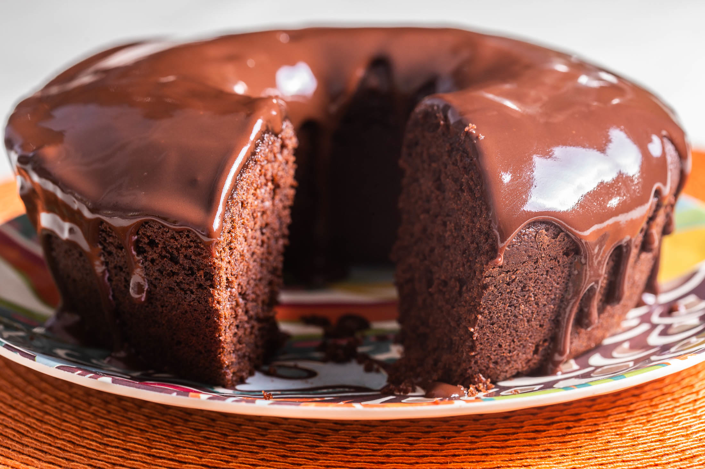

Doces · Tortas e bolos
Bolo de chocolate

Ingredientes
- 50 g de chocolate amargo picado
- 3/4 xícara de manteiga
- 1 1/2 xícara de açúcar
- 3 ovos
- 1 colher (chá) de baunilha
- 2 xícaras de farinha de trigo
- 2 colheres (chá) de fermento em pó
- 1/2 colher (chá) de sal
- 3/4 xícara de leite
- Calda: 1 colher (sopa) manteiga, 1 xícara açúcar, 1/2 xícara chocolate em pó, 1/4 xícara leite
- 120 g de chocolate branco picado para decorar
Modo de preparo
- Derreta o chocolate amargo em banho-maria; reserve.
- Misture manteiga e açúcar até cremoso; acrescente ovos um a um.
- Junte baunilha e chocolate derretido.
- Peneire farinha, fermento e sal; incorpore alternando com leite.
- Pré-aqueça a 180 °C. Unte fôrma de buraco no meio (26 cm). Asse até firmar.
- Desenforme após 10 min; esfrie completamente.
- Calda: cozinhe manteiga, açúcar, chocolate em pó e leite em fogo brando; espalhe no bolo frio.
- Derreta chocolate branco em banho-maria; despeje sobre o bolo. Esfrie e congele.
Observação
Congelamento: plástico e saco sem ar; descongele 2 h.